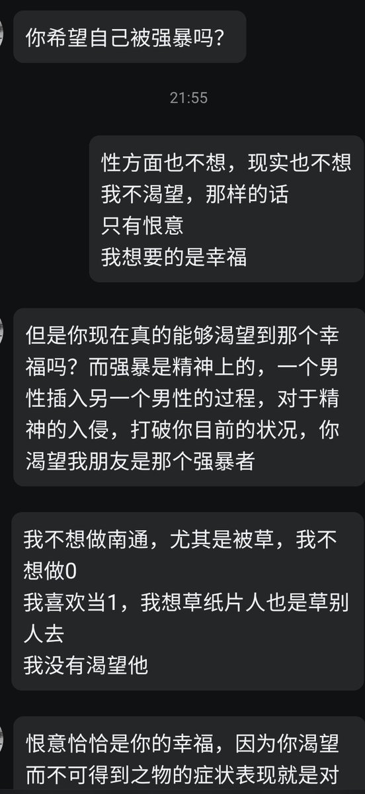
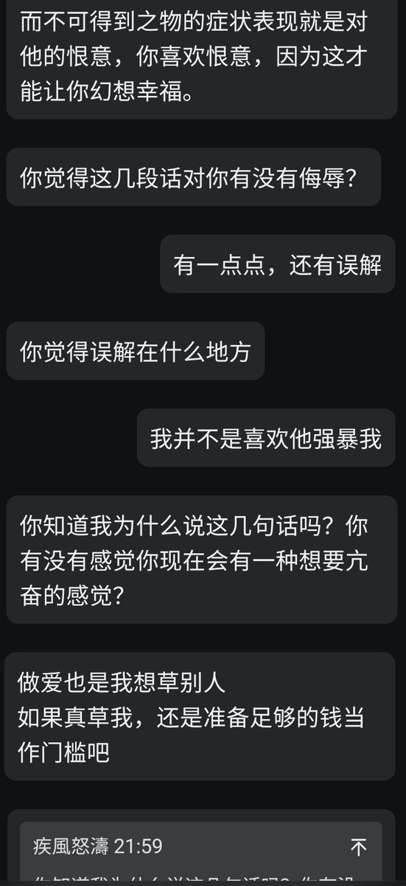
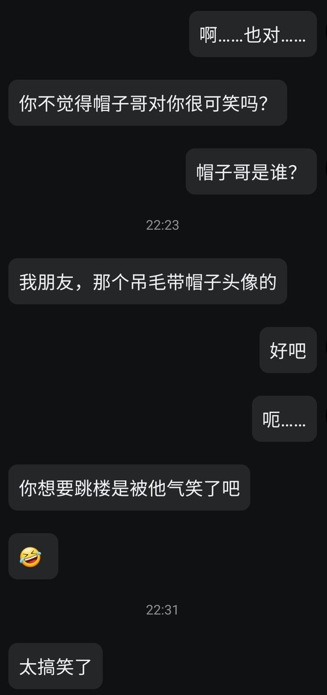
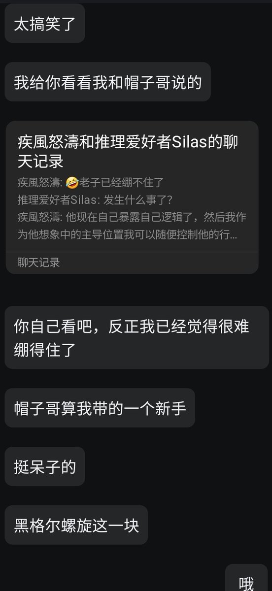

永雏泉
@ci_shang85157
@yiwa76862 @ashasw114514 @bing2000100830 @fuziwaranyanya @ayameeii @ArivenDar 怎么这样




聽到腐爛金魚的呻吟聲
@yiwa76862
请大家注意国内关于黑格尔，拉康的思考者。他们即便思考很多，但是他们的心中毫无对精神病的自杀理解。他们只是可怕的“愉悦犯”喜欢侵犯你的心理
@ashasw114514 @bing2000100830 @ci_shang85157 @fuziwaranyanya @ayameeii @ArivenDar https://t.co/eDRRtniTM6